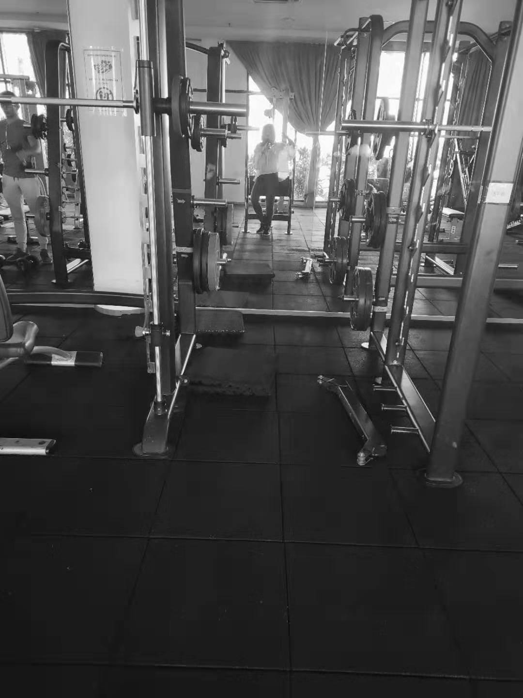

Personal CV
CONTACT INFORMATION
1.mobil number:0194827498
2.mail address:CST1909162@xmu.edu.my
3.We Chat number:JoannaPro
CAREER OBJECTIVE
I want to join in the Management Department.
SKILLS
I am always ready to improve myself and lead the group to move forward.
WORK EXPERIENCE
Vice president of student union
2018-2019
Lead the team going forward constantly;
Gain recognition from more and more people.
EDUCATION
degree
XIAMEN UNIVERSITY MALAYSIA
LEADERSHIP
Organize campus activities;
Assist the teacher to work;
Participate in charity events.